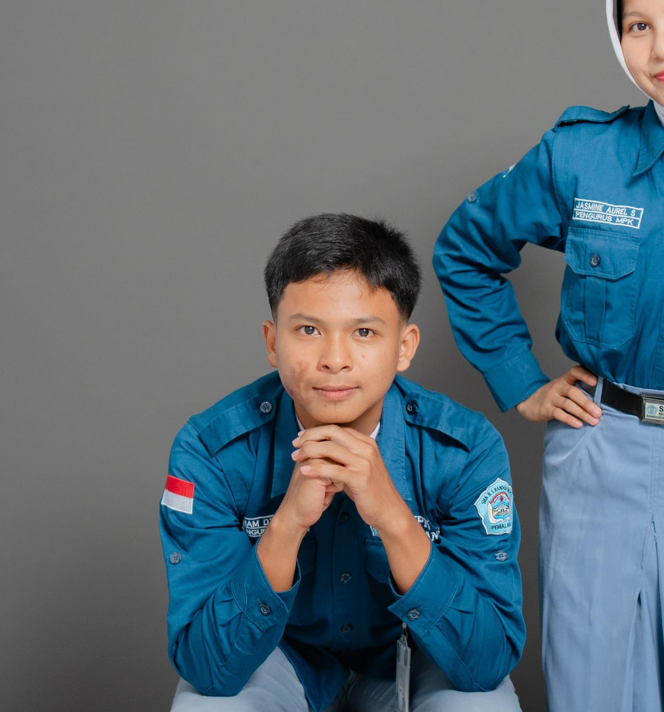

Organisasi
(Organizations)
Organisasi dan kepanitiaan yang diikuti.
Organizations and committees participated in.

Undergraduate Smart City Information System Student at Telkom University

Mahasiswa S1 Sistem informasi terapan kota cerdas di Telkom University. Memiliki minat tinggi terhadap Web Development, teknologi Blockchain, dan eksplorasi Kecerdasan Buatan (AI). Memiliki latar belakang dalam organisasi, kepemimpinan, komunikasi, kompetisi, dan riset IT yang membentuk keahlian dalam kepemimpinan, manajemen operasional, dan kemampuan teknis di bidang IT. Sangat tertarik pada pengembangan solusi digital untuk Smart City dan terus mendalami ekosistem teknologi terbaru untuk membangun karier yang berdampak di industri IT.
"A student of the Undergraduate Smart City Information System program at Telkom University. Highly interested in Web Development, Blockchain technology, and Artificial Intelligence (AI) exploration. Possessing a background in organization, leadership, communication, competitions, and IT research, which has shaped my expertise in leadership, operational management, and technical capabilities in the IT field. Deeply interested in developing digital solutions for Smart Cities and continuously exploring the latest technology ecosystems to build an impactful career in the IT industry."
Lanjut (Next)| Student Ambassador | Web Developer | Blockchain Researcher | AI Explorer |
Berbekal minat yang tinggi pada teknologi desentralisasi dan otomasi, saya aktif membangun fondasi ekosistem masa depan. Rutinitas saya mencakup pengembangan web, riset Blockchain, serta eksplorasi terus-menerus terhadap potensi implementasi Kecerdasan Buatan (AI).
"Driven by a strong passion for decentralized technologies and automation, I actively build the foundations of future ecosystems. My routine encompasses web development, Blockchain research, and the continuous exploration of Artificial Intelligence (AI) implementations."
Lanjut (Next)Pengalaman dan proyek yang sedang berjalan meliputi:
"Experience and ongoing projects include:
Ringkasan mengenai organisasi, prestasi, proyek, dan pengalaman saya.
A summary of my organizations, achievements, projects, and experiences.
Organisasi dan kepanitiaan yang diikuti.
Organizations and committees participated in.

Pencapaian dan sertifikasi yang pernah diraih.
Achievements and certifications obtained.

Proyek-proyek yang dijalani.
Projects undertaken.

Pengalaman dan kegiatan lain yang dilakukan.
Other experiences and activities undertaken.